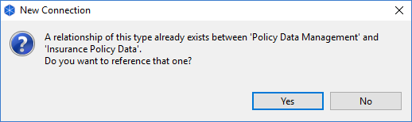
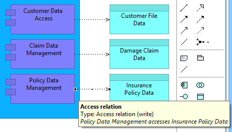
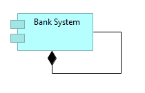

关系、规则和条例。
关系、规则和条例。ArchiMate 元素可以连接通过给定的一组关系（连接）到其他元素。有些关系是允许的，有些则不允许。如果关系不允许，则光标将显示为“不允许”符号，即带有对角线的圆圈。如果允许关系，它将显示为“插头”符号。
要创建新元素并将其添加到视图，请在 调色板 上选择所需元素，然后单击或将新图形拖到画布区域。将图形添加到画布后，您可以通过通常的拖动操作调整其大小和重新定位它。
了解从调色板向视图添加元素（和关系）会自动将这些元素添加到模型树中，这一点很重要。例如，将“业务施动者”元素拖到画布上会在视图上创建一个名为“业务施动者”的图形，并在 模型树 上创建一个具有相同属性的节点名字。
此外，如果您删除视图中的元素，则模型树中的相应元素不会删除。这是因为该元素可能在模型中的另一个视图中被引用。要完全删除元素，您必须在模型树中将其删除或选择右键菜单项“从模型中删除”。
您可以通过单击图形上的文本区域直接编辑元素的名称。双击该图会打开属性窗口，您可以在其中编辑所选元素的属性。
可以在属性窗口中编辑视图中选定元素的属性。要打开属性窗口，请双击图形或选择图形并从工具栏或主菜单打开窗口。视图中的每个元素都有不同的属性，可以在属性窗口中设置或查看。有关详细信息，请参阅属性窗口部分。
双击视图中的元素打开属性窗口，单击已选择元素的文本字段可以直接编辑元素的文本。
要向视图添加新关系（连接），请在 调色板 上选择所需的连接工具，然后从视图上的一个元素拖动到同一视图上的另一个元素。
与从调色板添加元素一样，向视图添加关系也会自动将其添加到模型树的“关系”文件夹中。
在视图中添加新连接时，如果源元素和目标元素之间已经存在相同类型的模型关系，则会出现一个对话框，让您可以选择从连接中引用该模型关系，或者创建一个新的连接和模型关系：
提供重用模型关系选项的对话框。
关系、规则和条例。
ArchiMate 元素可以连接通过给定的一组关系（连接）到其他元素。有些关系是允许的，有些则不允许。如果关系不允许，则光标将显示为“不允许”符号，即带有对角线的圆圈。如果允许关系，它将显示为“插头”符号。
一旦在元素之间创建了关系（连接），当鼠标光标悬停在连接上以显示工具提示时，可以显示一些有用的信息。工具提示显示关系的名称、类型以及一些描述源元素和目标元素之间关系性质的文本。
当鼠标悬停在连接上时，工具提示会显示有用的信息
您可以根据需要添加自关联关系（连接）。这是一种目标元素和源元素相同的关系。您可以通过从调色板中选择所需的关系，单击元素然后再次单击元素来创建从元素到自身的连接：
循环关系